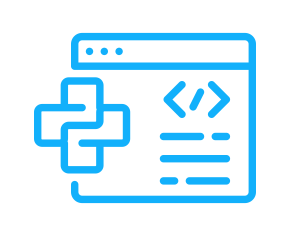
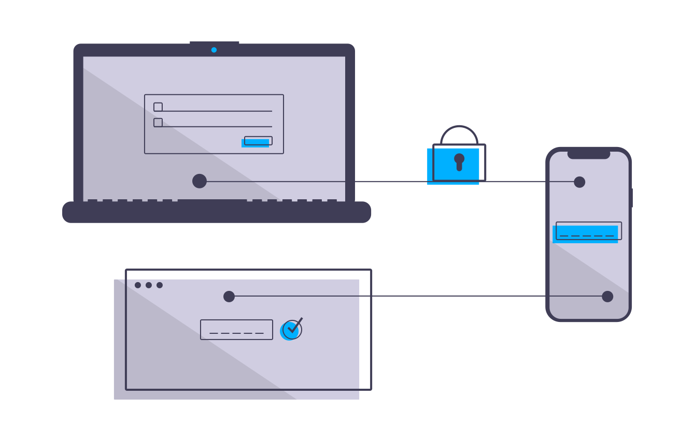

Sherman Harvey Rodríguez
I am currently pursuing a bachelor's degree in mechatronics engineering and this is my resume
Linkedin: www.linkedin.com/in/sherman-harvey-82437a215
Soft skills
Python

Security in Web applications and services.
 Working knowledge of Security in Web applications and services.
Web trends
 Ability to learn latest technologies and web trends
Ability to learn latest technologies and web trends